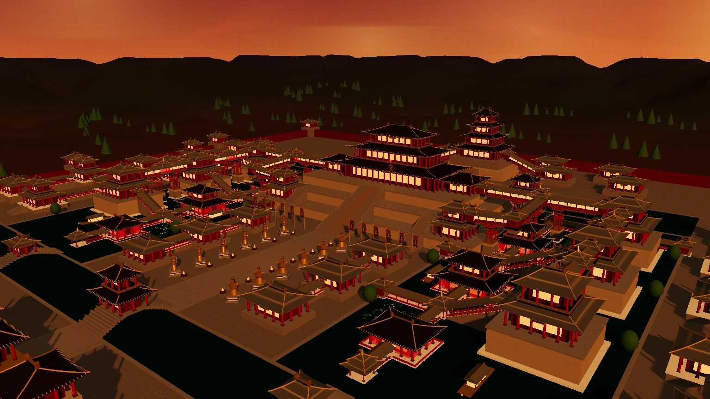
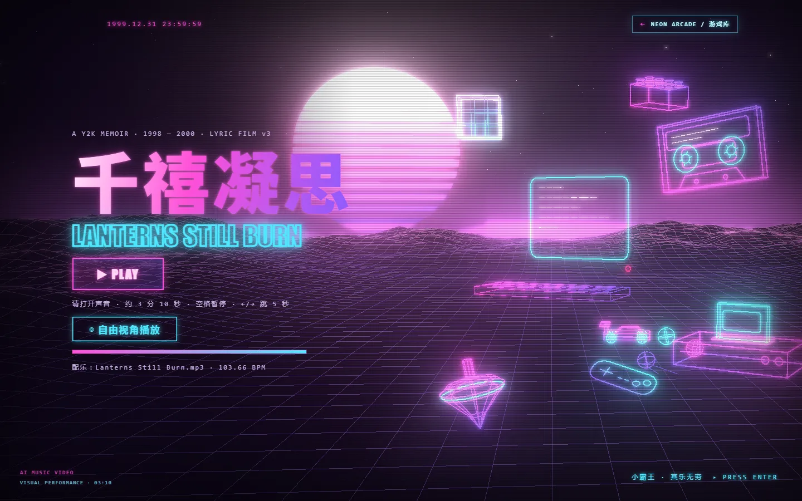

MV / 01互动漫游进入作品 ↗ 阿房宫INTERACTIVE MUSIC SCENEAFANG PALACE八处景点 · 自由视角夕照 / 晴昼 / 夜宴配乐《盛世金钟》· 3:35伴着《盛世金钟》，漫游重重宫阙、十二金人与湖上画舫，展开你的阿房宫图卷。免费在线欣赏进入作品 ↗
MV / 0203:10进入作品 ↗ 千禧凝思AI MUSIC VIDEOLANTERNS STILL BURN穿过 1998—2000 的霓虹记忆。一场把歌词、旧街区和千禧年夜色揉在一起的 AI 音乐视觉演出。免费在线欣赏进入作品 ↗